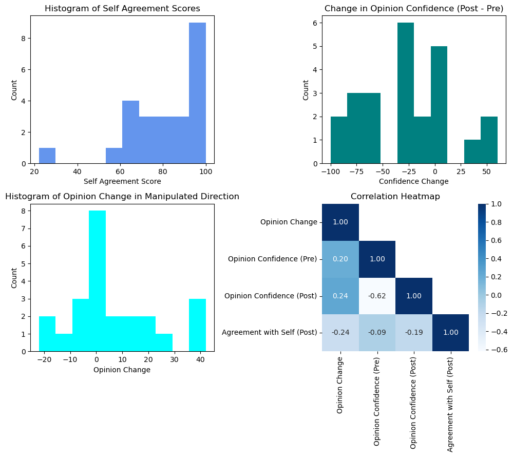
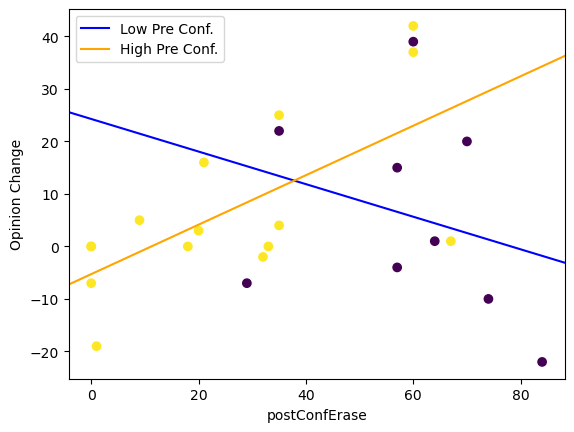
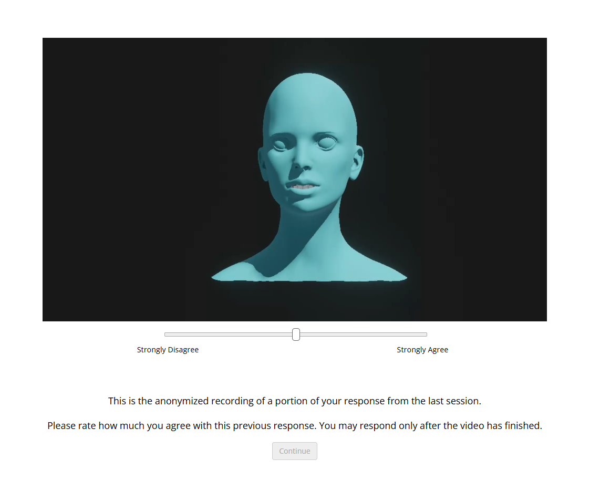

Opinion Change Blindness using Manipulated Virtual Selves
This project leveraged virtual agents to explore change blindness. Participants reported their opinion on the issue 'Should We Be Able to Delete Our Bad Memories?' and were shown a version of themselves, facial movements projected onto a virtual agent and manipulated audio, and asked to rate their agreement with their past selves.
The manipulated audio was editted as to flip their viewpoint on the issue.
We did not observe opinion change blindness, where participants agreed with the manipulated version of themselves.
Interestingly, this effect was strongest for individuals who expressed high levels of opinion confidence in both sessions (while giving the initial interview, and after viewing the manipulated self).
This presence of this opinion change blindness is concerning and of import in a digital age where manipulated depictions of our own and others' likeness are increasingly prevalent and possibly used to disseminate misinformation or influence public perception.
Results

Top left: Distribution of participant report of agreement with the video of their manipulated-self. Top right: Distribution of participant opinion confidence change between experimental sessions. The mean, -27.71, is negative, indicating participants were less confident after viewing the manipulated-self video. Bottom left: Distribution of participant opinion change, in the manipulated direction. Negative values represent participants becoming more extreme in their opinion, as compared to their stance in the first experimental session. Bottom right: Correlation matrix of key measures.
Interaction between Opinion Change and Confidence Levels

Opinion Change by Post Confidence (2nd Session) grouped by Pre-Confidence Groups (1st Session).
Participants
Twenty-four participants were recruited from the University of California, Merced and compensated with course-credit.
Agreement Rating Screen

Example participant screen in the movement assignment task where participants viewed two identical heads, moving and speaking, and were asked to attribute the speech to one head.
Protocol
This experiment was conducted in 2 sessions. In the first session, participants viewed videos pertaining to the issue and then were surveyed and video recorded on their personal opinion. Before the second session, researchers projected participants' facial movements onto a virtual agent and manipulated the audio to flip participant opinion. In the second session, participants were shown this video of "themselves" and asked to rate agreement and confidence.